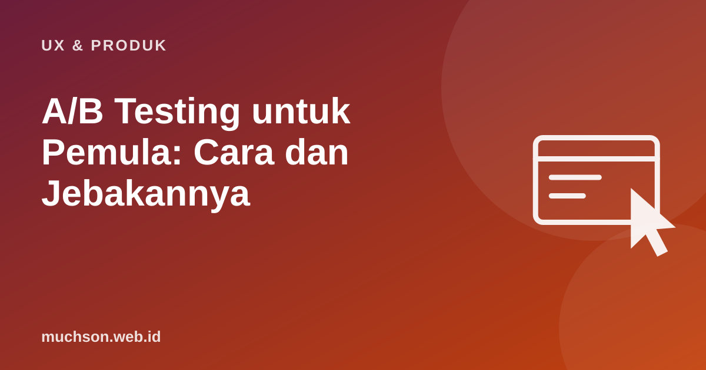

Beranda › Artikel › UX & Produk
UX & ProdukA/B Testing untuk Pemula: Cara dan Jebakannya
Daripada berdebat versi tombol mana yang lebih baik, tunjukkan dua versi kepada pengguna secara acak dan lihat mana yang lebih berhasil. Itulah A/B testing. Kedengarannya sederhana, tetapi banyak tes menghasilkan kesimpulan yang salah karena sampel terlalu kecil atau dihentikan terlalu cepat.

Cara kerjanya
Menulis hipotesis
Karena [data/temuan]: 40% pengguna meninggalkan form pendaftaran di kolom tanggal lahir,
kami percaya [perubahan]: menghapus kolom tanggal lahir dari langkah pertama
akan [dampak]: menaikkan tingkat penyelesaian pendaftaran,
yang diukur dengan [metrik]: % pengunjung halaman daftar yang menyelesaikan pendaftaran.Berapa sampel yang dibutuhkan?
Perubahan kecil butuh sampel besar untuk dibedakan dari kebetulan. Rumus praktis (kekuatan uji 80%, signifikansi 5%) yang dikenal sebagai aturan Lehr: sampel per varian ≈ 16 × p(1−p) / δ², dengan p tingkat konversi dasar dan δ selisih absolut yang ingin dideteksi.
Bila kalkulator menunjukkan Anda butuh 6 bulan, A/B test mungkin bukan alat yang tepat untuk perubahan ini. Pakai riset kualitatif, atau uji perubahan yang lebih besar.
Jebakan yang paling sering
Membaca hasil
- Lihat selisih dan rentang kepercayaannya, bukan hanya "signifikan atau tidak".
- Hasil "tidak signifikan" bukan berarti kedua versi sama, bisa jadi sampel kurang.
- Pertimbangkan biaya: perubahan kecil yang mahal dirawat mungkin tidak layak walau menang tipis.
- Catat setiap tes, termasuk yang gagal, agar tim belajar.
Tanya jawab
Alat apa untuk A/B test?
Apakah A/B test etis?
Bisakah menguji lebih dari dua versi?
Sumber dan bacaan lanjut
- Kohavi, Tang, Xu: Trustworthy Online Controlled Experiments (Cambridge University Press)
- Evan Miller: How Not To Run an A/B Test
- Evan Miller: Sample Size Calculator